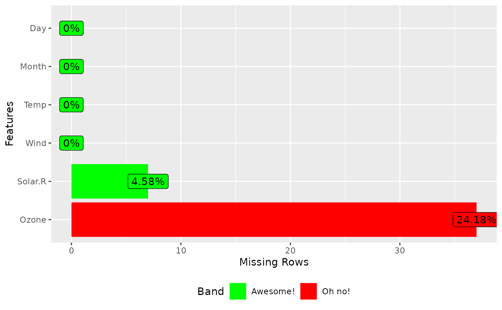

This function returns and plots frequency of missing values for each feature.
Usage
plot_missing(
data,
group = list(Good = 0.05, OK = 0.4, Bad = 0.8, Remove = 1),
group_color = list(Good = "#1B9E77", OK = "#E6AB02", Bad = "#D95F02", Remove =
"#E41A1C"),
missing_only = FALSE,
geom_label_args = list(),
title = NULL,
ggtheme = theme_gray(),
theme_config = list(legend.position = c("bottom"))
)Arguments
- data
input data
- group
missing profile band taking a list of group name and group upper bounds. Default is
list("Good" = 0.05, "OK" = 0.4, "Bad" = 0.8, "Remove" = 1).- group_color
bar color list for each of the group. Default is
list("Good" = "#1B9E77", "OK" = "#E6AB02", "Bad" = "#D95F02", "Remove" = "#E41A1C").- missing_only
plot features with missing values only? Default is
FALSE.- geom_label_args
a list of other arguments to geom_label
- title
plot title
- ggtheme
complete ggplot2 themes. The default is theme_gray.
- theme_config
a list of configurations to be passed to theme.
Examples
plot_missing(airquality)
plot_missing(airquality, missing_only = TRUE)
## Customize band
plot_missing(airquality, group = list("B1" = 0, "B2" = 0.06, "B3" = 1))
plot_missing(airquality, group = list("Awesome!" = 0.2, "Oh no!" = 1),
group_color = list("Awesome!" = "green", "Oh no!" = "red"))

## Shrink geom_label size
library(ggplot2)
plot_missing(airquality, geom_label_args = list("size" = 2,
"label.padding" = unit(0.1, "lines")))